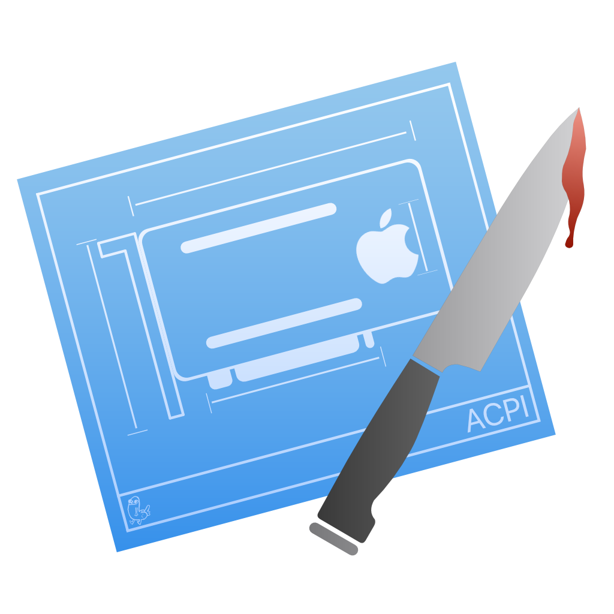

# Getting started with ACPI
# A quick explainer on ACPI
So what are DSDTs and SSDTs? Well, these are tables present in your firmware that outline hardware devices like USB controllers, CPU threads, embedded controllers, system clocks and such. A DSDT(Differentiated System Description Table) can be seen as the body holding most of the info with smaller bits of info being passed by the SSDT(Secondary System Description Table). You can think of the DSDT as the building blueprints with SSDTs being sticky notes outlining extra details to the project
You can read more about ACPI and it's spec here: ACPI 6.3 Manual (opens new window)
So why do we care about these tables?
macOS can be very picky about the devices present in the DSDT and so our job is to correct it. The main devices that need to be corrected for macOS to work properly:
- Embedded controllers(EC)
- All semi-modern intel machines have an EC (usually called H_EC, ECDV, EC0, etc...) exposed in their DSDT, with many AMD systems also having it exposed. These controllers are generally not compatible with macOS and can cause panics, so then need to be hidden from macOS. macOS Catalina requires a device named
ECto be present though, so a dummy EC is created. - With laptops, the actual embedded controller still needs to be enabled for battery and hotkeys to work, and renaming the EC can additionally cause issues with windows, so creating a fake EC without disabling the real embedded controller is preferable.
- All semi-modern intel machines have an EC (usually called H_EC, ECDV, EC0, etc...) exposed in their DSDT, with many AMD systems also having it exposed. These controllers are generally not compatible with macOS and can cause panics, so then need to be hidden from macOS. macOS Catalina requires a device named
- Plugin type
- This allows the use of XCPM providing native CPU power management on Intel Haswell and newer CPUs, the SSDT will connect to the first thread of the CPU. Not meant for AMD
- AWAC system clock.
- This applies to all 300 series motherboards including many Z370 boards, the specific issue is that newer boards ship with AWAC clock enabled. This is a problem because macOS cannot communicate with AWAC clocks, so this requires us to either force on the legacy RTC clock or if unavailable create a fake one for macOS to play with
- NVRAM SSDT
- True 300 series motherboards(non-Z370) don't declare the FW chip as MMIO in ACPI and so the kernel ignores the MMIO region declared by the UEFI memory map. This SSDT brings back NVRAM support
- Backlight SSDT
- Used for fixing backlight control support on laptops
- GPIO SSDT
- Used for creating a stub to allow VoodooI2C to connect onto, for laptops only
- XOSI SSDT
- Used for rerouting OSI calls to this SSDT, mainly used for tricking our hardware into thinking its booting Windows so we get better trackpad support. This is a very hacky solution known for breaking Windows boot, use the GPIO SSDT instead. Usage of XOSI will not be covered in this guide
- IRQ SSDT and ACPI patches
- Needed for fixing IRQ conflicts within the DSDT, for laptops mainly. SSDTTime exclusive
- Note Skylake and newer systems rarely have IRQ conflicts, this is mainly prevalent on Broadwell and older
Now head to the next page on what SSDTs do your systems need: